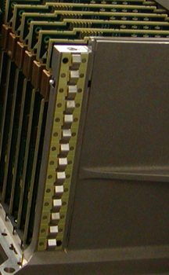
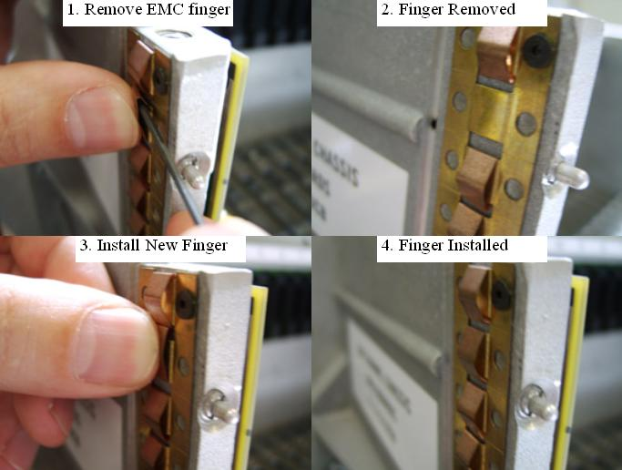

Operating Documentation
Direction 5307452-8EN, Rev# 4
Discovery CT750 HD Service Methods - Adv
Operating Documentation |
| Required Persons | Preliminary Reqs | Procedure | Finalization |
|---|---|---|---|
| 1 | Timing Not Applicable | 30 mins | Timing Not Applicable |
This procedure describes how to replace the EMC finger strips on each side of the DIFB chassis.
| Last Revised on: | June 5, 2008 |
| Item | Qty | Effectivity | Part# | Manufacturer | |
|---|---|---|---|---|---|
| Standard tool kit | 1 | - | - | - | |
| Item | Qty | Effectivity | Part# | Manufacturer | |
|---|---|---|---|---|---|
| DIFB EMC strip | See IPL | - | - | - | |
| CRUSH HAZARD. | |
| UNEXPECTED GANTRY ROTATION CAN CAUSE SERIOUS INJURY. | |
| Never service the gantry with the axial drive enabled. Use the gantry rotation lock to lock out gantry rotation. See safety menu of Service Document gui for appropriate procedures. |
Remove gantry right side cover.
Refer to Replacement → Gantry → Enclosure → (Cover Removal Procedures).
Disable Axial drive and HVDC from the service switch panel.
Rotate the gantry to access the desired DIFB chassis.
Disable gantry 120 VAC service switch from the service switch panel.
Lock the gantry rotation to keep the gantry from moving during service.
Remove the right side top cover for easier access to the DIFB chassis.
Remove DIFB chassis cover fasteners and use press in on cover release pin tabs shown in Illustration 1 while pulling cover up and off chassis.
Illustration 1: DIFB cover top view

The fingers of the chassis EMC strip can be replaced using the following process. Replace any fingers damaged.
Illustration 2: DIFB chassis EMC strip

Illustration 3: Finger removal overview

Using a small hex wrench (2 or 2.5 mm) push in on the finger to flatten it expanding the fingers with the hex wrench behind the finger pulling the top of the finger up and out. See Illustration 3 step 1.
Perform the same procedure on the EMC strip received as a FRU. (NOTE: excess fingers from the FRU can't be kept on hand for any future needs)
Install the new finger by pushing in against the EMC strip to spread the tabs and sliding the finger up and down to engage the tabs on the back of the EMC finger. See Illustration 3 step 3.
Reinstall the DIFB chassis cover. (Use a flat blade driver bit or Torx T20 bit) Install the 4 captive cover screws and Torque to:
Table 1: DIFB chassis captive screws (4)
| 2.75 N-m | 2 lb-ft | 24 lb-in | 28 Kg-cm |
Install the 2 - M6 cover screws and Torque to:
Table 2: DIFB chassis corner M6 screws (2)
| 7.9 N-m | 5.8 lb-ft | 70 lb-in | 80 Kg-cm |
Install the gantry top cover.
Refer to Replacement → Gantry → Enclosure → (Cover Removal Procedures).
Turn on the gantry 120 VAC, HVDC and Axial Drive service switches from the service switch panel. Push the E-stop reset button on the bottom right of the service switch panel.
Install the gantry right side cover.
No finalization required.